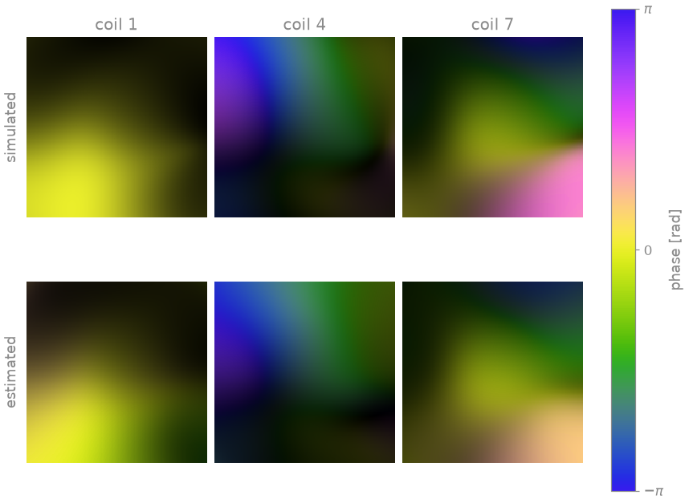
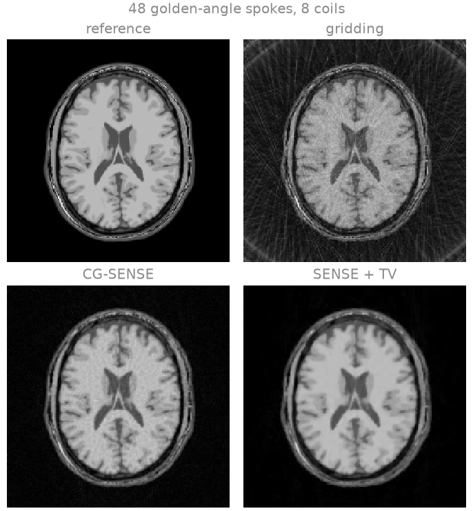
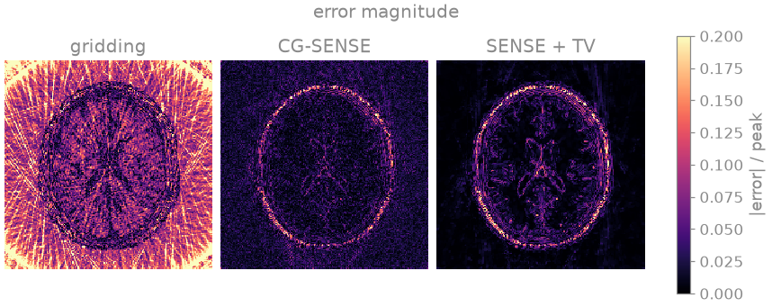
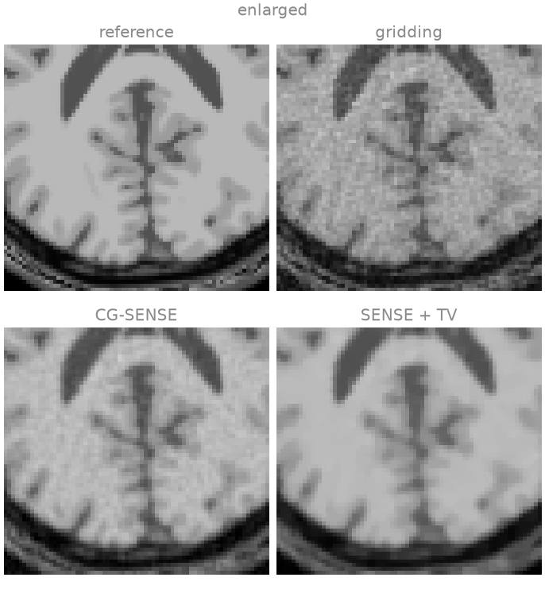

Note
Go to the end to download the full example code.
Radial SENSE reconstruction#
This lesson reconstructs an undersampled golden-angle radial acquisition with eight receive coils: the density-compensated gridding reconstruction first, then an iterative SENSE reconstruction with coil sensitivities estimated from the radial data themselves, with and without a total-variation penalty. The aim is to see which of the streak artefacts of radial undersampling the coil encoding removes, which the regularization removes, and what each costs.
A radial acquisition that satisfies the Nyquist criterion at the edge of k-space needs \(\pi/2\) times as many spokes as the matrix has lines; with fewer, the azimuthal gaps between spokes alias into streaks that run across the whole field of view. Radial undersampling is nevertheless benign compared with Cartesian undersampling: every spoke passes through the k-space centre, so the low spatial frequencies stay fully sampled and the aliasing is incoherent rather than a discrete fold-over. Parallel imaging removes it by fitting the image to the non-Cartesian SENSE model [1]
with \(S\) the coil sensitivities, the NUFFT evaluated along the trajectory and \(W\) an optional weighting of the samples. The fit is solved iteratively, since \(A^H A\) is not diagonal in any basis.
The measured data are simulated with the same transform the reconstruction uses, so the comparison isolates the undersampling, the noise and the error of the estimated sensitivities from any mismatch between the forward model and the measurement. The phantom and the coil sensitivities are built as in From k-space to image; the cell that does it is hidden on this page and present in the script this page can be downloaded as.
Learning objectives
Simulate a multichannel radial acquisition with
bartorch.linop.NoncartesianSense.Estimate sensitivities from the radial data with
bartorch.tools.ncalib().Compare gridding, unregularized CG-SENSE and total-variation-regularized SENSE, and identify the residual artefact of each.
Reconstruct with
bartorch.apps.pics()and with the operator underbartorch.optim.ADMM, and compare the two forms of the normal operator.
It follows Trajectories and transforms. The next lesson, Parameter maps straight from k-space, fits a signal model to the data. The Tour Dynamic golden-angle radial MRI adds a time axis to this encoding.
import csv
import time
from pathlib import Path
import brainweb_dl
import numpy as np
import torch
from brainweb_dl import get_mri
import bartorch
import bartorch.tools as bt
from bartorch import apps, linop, optim, priors
SIZE = 192
COILS = 8
SPOKES = 48 # against pi/2 * SIZE = 302 for a trajectory that is not undersampled
TV_WEIGHT = 0.0005
ITERATIONS = 30
Acquisition#
Forty-eight golden-angle spokes of 192 samples each, across a 192 matrix: \(\pi/2 \times 192 \approx 302\) spokes would sample the edge of k-space at the Nyquist rate, so the acquisition is undersampled by a factor of about 6.3. Successive spokes are rotated by the golden angle, 111.25 degrees, so any contiguous subset of them covers k-space nearly uniformly [2]; Dynamic golden-angle radial MRI relies on that property.
bartorch.linop.NoncartesianSense maps an image to the samples of
every channel along the trajectory. The measurement is that operator applied
to the phantom, with complex Gaussian noise of variance \(10^{-4}\) per
sample added, as in the Cartesian lessons.
(192, 192) -> (8, 48, 192)
Plan(transform=nufft, image=sensitivities, normal=kernel, coil_batch=1, streamed=coils, executor=slab)
The operator’s samples are (coils, spokes, samples) along a trajectory
(spokes, samples, 3) whose kz component is zero, which makes the
transform two-dimensional. bartorch.apps.pics() takes that layout.
BART’s commands, bartorch.tools.ncalib() and
bartorch.nufft_adjoint() among them, carry non-Cartesian k-space as
(coils, spokes, samples, 1), whose trailing axis is the readout dimension
of a Cartesian acquisition, so they are given measured[..., None].
Sensitivity calibration#
ESPIRiT reads its calibration matrix from a Cartesian neighbourhood of the
k-space centre, so on radial data it needs that region gridded first.
bartorch.tools.ncalib() estimates the sensitivities from the samples as
they were measured, by nonlinear inversion [3] at low resolution; the
densely sampled centre of a radial acquisition acts as its own
autocalibration region.
N=True divides the estimated maps by their root sum of squares. A SENSE
fit recovers the image \(x\) for which \(Sx\) explains the data, so
maps whose root sum of squares varies across the field of view leave its
reciprocal in the image as a smooth intensity shading. ESPIRiT maps are
normalized by construction; nonlinear inversion maps are not.
maps = bt.ncalib(measured[..., None], t=trajectory, N=True)

The estimated maps reproduce the magnitude and phase of the simulated ones over the head. They are smoother, because nonlinear inversion penalizes the high spatial frequencies of the sensitivities, and outside the head, where there is no signal to calibrate from, they are extrapolated.
Gridding#
The gridding reconstruction is the density-compensated adjoint: each sample is weighted by its distance from the k-space centre (the ramp filter of filtered back-projection), the samples are interpolated onto the grid by the adjoint NUFFT, and the channels are combined by root sum of squares. It uses no model of the coil encoding, so the missing spokes appear in it as the streaks the point spread function of the trajectory predicts.
weights = torch.linalg.norm(trajectory.real[..., :2], dim=-1, keepdim=True)
weights = weights.clamp(min=0.25).to(torch.complex64)
channels = bartorch.nufft_adjoint(measured[..., None] * weights, trajectory, (SIZE, SIZE))
gridded = bartorch.rss(channels[:, 0], axes=(0,))
Iterative SENSE#
Conjugate gradients on the normal equations \(A^H A x = A^H y\), with no
penalty, is CG-SENSE [1]. The coil encoding separates the
aliased signal the streaks consist of, but at this undersampling the problem
is ill-conditioned, and each further iteration fits more of the noise; the
number of iterations acts as the regularization. A total-variation penalty
[4] adds prior knowledge instead: streaks and noise have a large total
variation, the anatomy a small one. ADMM is the algorithm pics selects
for this penalty.
cg_sense = apps.pics(measured, maps, traj=trajectory, maxiter=30)
term = priors.TotalVariation(axes=(-1, -2), weight=TV_WEIGHT)
start = time.perf_counter()
reconstruction = apps.pics(
measured, maps, traj=trajectory, regularizers=term, solver="admm", maxiter=ITERATIONS
)
print(f"pics: {time.perf_counter() - start:.2f} s")
results = {"gridding": gridded, "CG-SENSE": cg_sense, "SENSE + TV": reconstruction}
for name, estimate in results.items():
error = bt.nrmse(image.abs(), estimate.abs(), scaled=True)
similarity = bt.ssim(image.abs(), scaled(estimate, image))
print(f"{name:>12} NRMSE {error:.3f} SSIM {similarity:.3f}")
pics: 1.02 s
gridding NRMSE 0.324 SSIM 0.418
CG-SENSE NRMSE 0.087 SSIM 0.566
SENSE + TV NRMSE 0.084 SSIM 0.863



Gridding shows the streaks of radial undersampling over the whole field of view, superimposed on an image that is otherwise sharp: the low spatial frequencies are fully sampled, and the streaks come from the high ones. The error map shows them extending outside the head, where the object has no signal. CG-SENSE removes the streaks, whose aliased signal the coil encoding separates, and leaves amplified noise across the head; its largest errors are at the scalp, whose bright, thin edge has most of its energy at spatial frequencies the sparse outer k-space samples poorly. The total-variation penalty suppresses the noise as well. Its residual error lies along the tissue boundaries, and in the enlarged region the thin cortical folds are flattened, since a boundary between two tissues of similar intensity also has a small total variation. The disc of k-space the trajectory samples limits the resolution of all three.
The same solve through the operator#
Besides the iteration, pics scales the data. Off the Cartesian grid it
estimates the scale from the adjoint reconstruction and therefore needs the
operator, which bartorch.optim.data_scaling() takes. The encoding is
the operator built above, now over the estimated sensitivities.
A = linop.NoncartesianSense(maps[:, 0], (SIZE, SIZE), traj=trajectory)
data = measured / optim.data_scaling(measured[..., None], A=A)
start = time.perf_counter()
assembled = optim.ADMM(term, maxiter=ITERATIONS)(data, A)
print(f"operator and solver: {time.perf_counter() - start:.2f} s")
difference = (assembled.squeeze() - reconstruction.squeeze()).abs().max()
print(f"relative difference from pics: {float(difference / reconstruction.abs().max()):.1e}")
operator and solver: 0.99 s
relative difference from pics: 0.0e+00
The two run the same iteration over the same operator. The NUFFT spreads samples onto the grid over several threads and sums in the order they finish in, so the two can differ at the level of floating-point round-off.
The normal operator#
Each iteration applies \(A^H A\). For a single coil this is a
convolution with the point spread function of the trajectory, so it can be
computed exactly by FFTs on a grid of twice the matrix size (the Toeplitz
embedding [5]) instead of by a NUFFT and an adjoint NUFFT; with coils
it is that convolution between multiplications by the sensitivities. The
operator uses the convolution by default, and toeplitz=False requests the
transform pair. The two differ by the tolerance of the transforms, and the
iterations carry that difference into the reconstructions.
start = time.perf_counter()
pair = optim.ADMM(term, maxiter=ITERATIONS)(
data, linop.NoncartesianSense(maps[:, 0], (SIZE, SIZE), traj=trajectory, toeplitz=False)
)
print(f"without the Toeplitz normal: {time.perf_counter() - start:.2f} s")
print(f"relative difference {float((pair - assembled).abs().max() / assembled.abs().max()):.1e}")
without the Toeplitz normal: 0.46 s
relative difference 3.2e-02
The convolution costs an FFT, a pointwise multiplication and an inverse FFT on the doubled grid per coil, independent of the number of samples; the pair costs two non-uniform transforms, whose spreading and interpolation grow with the number of samples. With 48 spokes there are fewer samples than grid points, and the pair is not the slower of the two; as the number of samples grows, with more spokes or with the frames of a dynamic series sharing one normal operator, the convolution becomes the cheaper.
References#
Total running time of the script: (0 minutes 5.288 seconds)